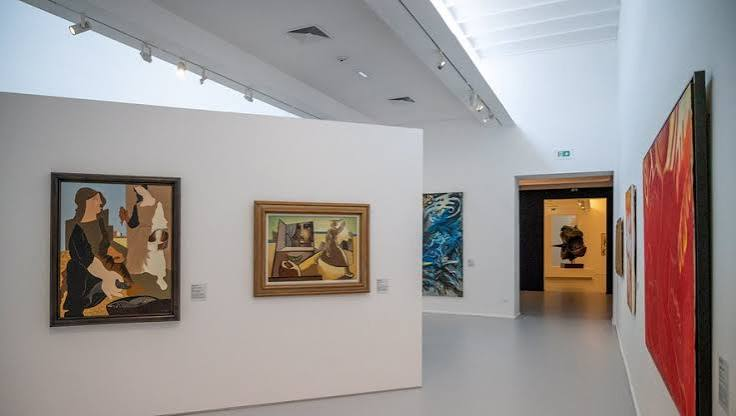

Musée
d'art moderne
de Céret


⟹ Musées Emblématiques ⟸
Céret, un foyer de la modernité artistique. L’histoire du musée d’Art moderne de Céret commence plusieurs décennies avant son inauguration. En 1910, le sculpteur catalan Manolo Hugué, le peintre et collectionneur Frank Burty Haviland et le compositeur Déodat de Séverac s’installent ou séjournent dans cette petite ville du Vallespir. Par leurs amitiés parisiennes, ils attirent bientôt à Céret plusieurs artistes de l’avant-garde européenne, faisant de la cité un étonnant laboratoire de création loin de Montmartre et de Montparnasse.

À l’été 1911, Pablo Picasso rejoint Céret, où il retrouve notamment Manolo et Frank Burty Haviland. Georges Braque y travaille également. Dans ce cadre catalan, les deux peintres poursuivent leurs recherches sur le cubisme analytique, décomposant formes et volumes dans des compositions qui comptent parmi les expériences majeures de l’art du XXe siècle. Picasso reviendra à Céret en 1912 et 1913. Juan Gris, Max Jacob, Auguste Herbin et d’autres créateurs participent à cette effervescence. La ville acquiert alors la réputation de « Mecque du cubisme ».
Cette première génération est suivie, entre les deux guerres, par de nouveaux artistes attirés par la lumière, le paysage et le climat intellectuel du Roussillon. Chaïm Soutine, André Masson, Marc Chagall, Krémègne, Kisling ou encore Raoul Dufy comptent parmi les noms associés à Céret et à ses environs. La ville devient ainsi un lieu de passage, de refuge et de travail où se croisent plusieurs courants de la modernité européenne.
L’idée d’un musée naît de cette histoire vécue. En 1948, les peintres Pierre Brune et Frank Burty Haviland entreprennent de créer à Céret un musée capable de conserver la mémoire des artistes ayant travaillé dans la ville. Leur méthode est singulière : plutôt que de constituer les collections uniquement par des achats institutionnels, ils sollicitent directement leurs amis artistes. Le futur musée se construit donc largement grâce aux liens personnels et aux dons.
À ce noyau s’ajoute un fonds plus ancien constitué par Michel Aribaud, archiviste de la ville et proche de nombreux artistes de passage, dont la collection avait été léguée à Céret par son épouse dès 1934. Picasso et Henri Matisse répondent avec générosité à l’appel des fondateurs, rejoints par de nombreux créateurs. Matisse offre notamment un ensemble de dessins liés à son séjour fauve à Collioure ; Picasso donne au fil des années un ensemble exceptionnel d’œuvres, renforçant durablement l’identité du musée.
Le musée est inauguré le 18 juin 1950 dans l’ancien couvent des Carmes, bâtiment du XVIIe siècle qui avait connu plusieurs usages au cours de son histoire. Pierre Brune en devient le premier conservateur. À sa mort en 1956, Frank Burty Haviland lui succède. Le musée affirme très tôt une vocation originale : raconter l’histoire artistique de Céret tout en restant ouvert à la création de son temps.
Un épisode illustre particulièrement le lien exceptionnel entre le musée et Picasso. En 1953, l’artiste revient à Céret et offre une remarquable série de coupelles tauromachiques réalisées à Vallauris. Ces céramiques, consacrées à l’univers de la corrida, deviennent l’un des ensembles emblématiques des collections. Au-delà de Picasso, les donations successives permettent au musée de représenter de nombreux artistes majeurs du XXe siècle et de prolonger l’esprit d’amitié qui avait présidé à sa fondation.
Devenu trop exigu, l’établissement connaît une profonde transformation à partir des années 1980. Une extension conçue par l’architecte Jaume Freixa, ancien collaborateur de Josep Lluís Sert, permet au musée rénové de rouvrir en 1993. Une nouvelle campagne d’agrandissement et de restructuration, menée de 2019 à 2022, augmente encore les espaces d’exposition et renouvelle le parcours. La réouverture de 2022 inscrit le musée dans le XXIe siècle sans rompre avec son histoire.
La singularité du musée d’Art moderne de Céret tient ainsi à son origine profondément humaine : il est né moins d’une politique de prestige que d’un réseau d’artistes, d’amitiés et de souvenirs partagés. Ses collections constituent aujourd’hui la mémoire matérielle d’un phénomène exceptionnel : la transformation, à partir de 1910, d’une petite cité catalane en l’un des foyers internationaux de l’art moderne.
De 1911 à 1913, en pleine effervescence cubiste, Picasso, Braque, Max Jacob et Juan Gris se succèdent à Céret, fuyant la flambée des loyers et l'agitation de Montmartre pour l'architecture dense et la lumière catalane du Vallespir. Une nouvelle vague d'artistes rejoint la ville dans les années 1920 et 1930, puis une troisième, fuyant le nazisme, durant la Seconde Guerre mondiale.
La Mecque du cubisme.
— André Salmon, critique d'art, Gil Blas, 1912Ce compagnonnage entre artistes et petite bourgade catalane, unique en Europe pour une ville de 8 000 habitants, se poursuit aujourd'hui encore à travers une politique d'expositions temporaires qui met en regard les grands noms du XXe siècle et la scène contemporaine.
Le pont du Diable, à Céret, célèbre pont médiéval enjambant le Tech d'une seule arche.
Les vergers de cerisiers, qui ont valu à la ville son surnom de capitale de la cerise, en fleurs dès la fin de l'hiver.
Amélie-les-Bains, station thermale voisine, pour prolonger la découverte du Vallespir.
Le massif du Canigou, sommet emblématique des Pyrénées catalanes, visible depuis les hauteurs de la ville.